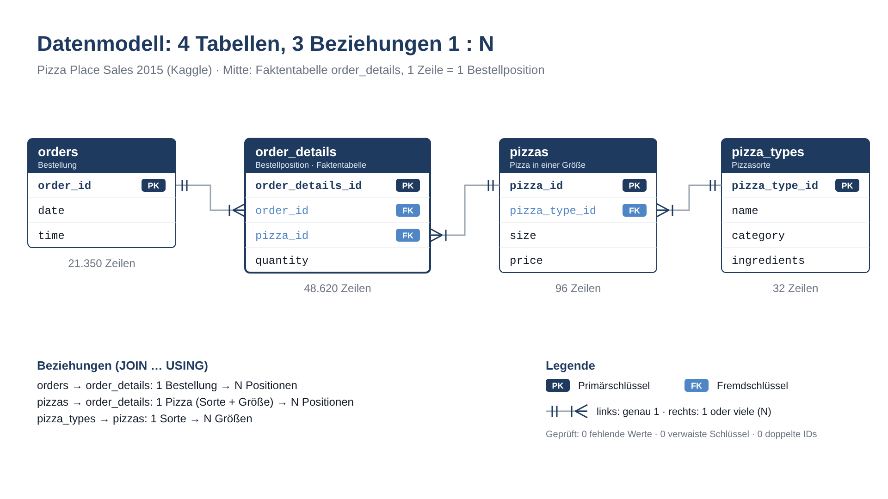

Pizzeria-Umsatz 2015:
Schichtplan, Speisekarte, Aktion
Analyse der Kassendaten für Laura Martinez – drei Entscheidungen für Januar, belegt mit Zahlen
Laura muss im Januar drei Entscheidungen treffen
Neue Inhaberin einer Pizzeria in New Jersey, Kassenexport für das ganze Jahr 2015 – „Am wichtigsten sind mir konkrete Empfehlungen mit Zahlen.“
Schichtplan
Wann ist Stoßzeit, wann ist es ruhig?
Speisekarte
Welche Pizzen können gestrichen werden? Zutaten verderben.
Aktion
Wann und womit schwache Stunden stärken?
8 Kernfragen: Kennzahlen · Monate · Wochentage & Uhrzeiten · Bestseller & Ladenhüter · Kategorien & Größen · Streichkandidaten · große Bestellungen · Aktion
4 Tabellen, 1 Jahr, 48.620 Bestellpositionen

Daten sind sauber – eine Tabelle sales_lines für das Dashboard
Prüfung in SQLite Online
- Zeilen gezählt: 21.350 · 48.620 · 96 · 32
- 0 fehlende Werte, 0 verwaiste Schlüssel, 0 doppelte IDs
- Zeitraum genau 01.01.–31.12.2015
- Typen mit
typeof(): price = real, quantity = integer →CASTals Absicherung
Kontrolle der Auswahl
kein JOIN-Duplikat
VIEW über alle 4 Tabellen (★ Bonus) → Export CSV
-- VIEW (★ Bonus)
CREATE VIEW sales_lines AS
SELECT
o.order_id AS order_id,
o.date AS order_date,
o.time AS order_time,
strftime('%m', o.date) AS month,
CASE strftime('%w', o.date)
WHEN '1' THEN 'Monday' WHEN '2' THEN 'Tuesday'
WHEN '3' THEN 'Wednesday' WHEN '4' THEN 'Thursday'
WHEN '5' THEN 'Friday' WHEN '6' THEN 'Saturday'
WHEN '0' THEN 'Sunday'
END AS weekday,
strftime('%H', o.time) AS hour,
pt.name AS pizza_name,
pt.category AS category,
p.size AS size,
CAST(p.price AS REAL) AS unit_price,
CAST(od.quantity AS INTEGER) AS quantity,
CAST(p.price AS REAL) * CAST(od.quantity AS INTEGER) AS revenue
FROM orders o
JOIN order_details od USING (order_id)
JOIN pizzas p USING (pizza_id)
JOIN pizza_types pt USING (pizza_type_id);
-- Kontrolle
SELECT
COUNT(*) AS row_count,
ROUND(SUM(revenue), 2) AS total_revenue,
SUM(quantity) AS pizzas_sold,
COUNT(DISTINCT order_id) AS orders
FROM sales_lines;1 Zeile = 1 Bestellposition, 12 Felder
818 Tsd. $ Umsatz aus 21.350 Bestellungen
- 49.574 verkaufte Pizzen (Menge, nicht Zeilen)
- Ø 2,32 Pizzen pro Bestellung (49.574 / 21.350)
- Ø Bestellwert = Umsatz ÷ Bestellungen, nicht AVG über Positionen
WITH base AS (
SELECT
SUM(CAST(p.price AS REAL) * CAST(od.quantity AS INTEGER)) AS total_revenue,
COUNT(DISTINCT od.order_id) AS total_orders,
SUM(CAST(od.quantity AS INTEGER)) AS pizzas_sold
FROM order_details od
JOIN pizzas p USING (pizza_id)
)
SELECT
ROUND(total_revenue, 2) AS total_revenue,
total_orders,
pizzas_sold,
ROUND(total_revenue / total_orders, 2) AS avg_order_value,
ROUND(CAST(pizzas_sold AS REAL) / total_orders, 2) AS avg_pizzas_per_order
FROM base;Kein Saisoneffekt: Monatsumsatz schwankt nur um 13 %
- Abstand 8.530 $ = 13,3 % vom Oktober (8.530 / 64.028)
- ★ LAG: größter Anstieg November +9,9 %, Rückgang Dezember −8,1 %
WITH monthly AS (
SELECT
strftime('%m', o.date) AS month,
ROUND(SUM(CAST(p.price AS REAL) * CAST(od.quantity AS INTEGER)), 2) AS revenue,
COUNT(DISTINCT o.order_id) AS orders
FROM orders o
JOIN order_details od USING (order_id)
JOIN pizzas p USING (pizza_id)
GROUP BY month
)
SELECT
month,
revenue,
orders,
ROUND((revenue - LAG(revenue) OVER (ORDER BY month))
/ LAG(revenue) OVER (ORDER BY month) * 100, 1) AS pct_vs_prev_month
FROM monthly
ORDER BY month;Freitag ist der stärkste Tag, 14–16 Uhr die Flaute
- Sonntag am ruhigsten: 50,5 pro Tag (2.624 / 52)
- Spitzen 12–14 Uhr (Stunden 12 und 13: 2.520 und 2.455 Bestellungen) und 17–19 Uhr (2.336 und 2.399)
- Vor 11 Uhr und ab 23 Uhr: nur 1, 8 und 28 Bestellungen im ganzen Jahr
- Falle: 48 Montage, 50 Freitage, sonst 52 → Durchschnitt pro Tag statt Summe
-- Q3a: Wochentage
SELECT
CASE strftime('%w', date)
WHEN '1' THEN 'Monday'
WHEN '2' THEN 'Tuesday'
WHEN '3' THEN 'Wednesday'
WHEN '4' THEN 'Thursday'
WHEN '5' THEN 'Friday'
WHEN '6' THEN 'Saturday'
WHEN '0' THEN 'Sunday'
END AS weekday,
COUNT(*) AS orders,
COUNT(DISTINCT date) AS days,
ROUND(CAST(COUNT(*) AS REAL) / COUNT(DISTINCT date), 1) AS avg_orders_per_day
FROM orders
GROUP BY weekday
ORDER BY avg_orders_per_day DESC;
-- Q3b: Stunden
SELECT
strftime('%H', time) AS hour,
COUNT(*) AS orders,
ROUND(CAST(COUNT(*) AS REAL) / (SELECT COUNT(DISTINCT date) FROM orders), 1) AS avg_orders_per_day
FROM orders
GROUP BY hour
ORDER BY hour;Thai Chicken bringt fast 4-mal so viel Umsatz wie Brie Carre
- Umsatz- und Mengenlisten stimmen zu 3 von 5 überein; Menge-Spitze: Classic Deluxe 2.453 Stück
- Brie Carre ist in beiden Listen Letzter: 490 Stück
-- Top 5 Umsatz · Flop 5: ORDER BY revenue ASC · Menge: ORDER BY qty_sold
SELECT
pt.name AS pizza_name,
ROUND(SUM(CAST(p.price AS REAL) * CAST(od.quantity AS INTEGER)), 2) AS revenue,
SUM(CAST(od.quantity AS INTEGER)) AS qty_sold
FROM order_details od
JOIN pizzas p USING (pizza_id)
JOIN pizza_types pt USING (pizza_type_id)
GROUP BY pt.name
ORDER BY revenue DESC
LIMIT 5;Größe L bringt fast die Hälfte des Umsatzes: 45,9 %
- L + M = 76,4 %; XL + XXL zusammen nur 1,8 % (580 Stück)
- Kategorien fast gleich: Classic 26,9 · Supreme 25,5 · Chicken 24,0 · Veggie 23,7 %
- Abstand stärkste – schwächste Kategorie: 3,2 Prozentpunkte
-- Q5a: Kategorien – Anteil per Unterabfrage
SELECT
pt.category AS category,
ROUND(SUM(CAST(p.price AS REAL) * CAST(od.quantity AS INTEGER)), 2) AS revenue,
ROUND(
SUM(CAST(p.price AS REAL) * CAST(od.quantity AS INTEGER)) * 100.0
/ (SELECT SUM(CAST(p2.price AS REAL) * CAST(od2.quantity AS INTEGER))
FROM order_details od2
JOIN pizzas p2 USING (pizza_id))
, 1) AS revenue_share_pct
FROM order_details od
JOIN pizzas p USING (pizza_id)
JOIN pizza_types pt USING (pizza_type_id)
GROUP BY pt.category
ORDER BY revenue DESC;
-- Q5b ★: Größen – Anteil mit SUM() OVER ()
WITH by_size AS (
SELECT
p.size AS size,
SUM(CAST(p.price AS REAL) * CAST(od.quantity AS INTEGER)) AS revenue,
SUM(CAST(od.quantity AS INTEGER)) AS qty_sold
FROM order_details od
JOIN pizzas p USING (pizza_id)
GROUP BY p.size
)
SELECT
size,
ROUND(revenue, 2) AS revenue,
qty_sold,
ROUND(revenue * 100.0 / SUM(revenue) OVER (), 1) AS revenue_share_pct
FROM by_size
ORDER BY revenue DESC;4 von 32 Sorten: unter 1,9 % Umsatz und unter 1.000 Stück
- Brie Carre 1,42 % (490 Stück) · Green Garden 1,71 % · Spinach Supreme 1,87 % · Mediterranean 1,88 %
- HAVING: nur Sorten mit Anteil < 2 % (7 Sorten)
- CASE: < 1,9 % und < 1.000 Stück → 'remove', sonst 'watch'
- Beobachten: Spinach Pesto, Calabrese, Italian Vegetables (1,91–1,96 %)
-- Q6a: Kurzliste (HAVING) und Entscheidung (CASE)
WITH by_type AS (
SELECT
pt.name AS pizza_name,
ROUND(SUM(CAST(p.price AS REAL) * CAST(od.quantity AS INTEGER)), 2) AS revenue,
SUM(CAST(od.quantity AS INTEGER)) AS qty_sold,
ROUND(SUM(CAST(p.price AS REAL) * CAST(od.quantity AS INTEGER)) * 100.0
/ (SELECT SUM(CAST(p2.price AS REAL) * CAST(od2.quantity AS INTEGER))
FROM order_details od2
JOIN pizzas p2 USING (pizza_id)), 2) AS revenue_share_pct
FROM order_details od
JOIN pizzas p USING (pizza_id)
JOIN pizza_types pt USING (pizza_type_id)
GROUP BY pt.name
HAVING revenue_share_pct < 2.0
)
SELECT
pizza_name, revenue, qty_sold, revenue_share_pct,
CASE
WHEN revenue_share_pct < 1.9 AND qty_sold < 1000 THEN 'remove'
ELSE 'watch'
END AS decision
FROM by_type
ORDER BY revenue;Streichen kostet höchstens 6,87 % Umsatz und spart 6 Zutaten
- ★ Kumuliert: Brie Carre 1,42 → + Green Garden 3,12 → + Spinach Supreme 4,99 → + Mediterranean 6,87 %
- Zutaten: alle 6 Spalten = 1 → jede Zutat nur in einer Sorte (5 aus Brie Carre, 1 aus Mediterranean)
- Falle: ohne Kommas findet 'Prosciutto' auch „Prosciutto di San Daniele“
-- Q6b ★: kumulierter Umsatzanteil
WITH by_type AS (
SELECT
pt.name AS pizza_name,
SUM(CAST(p.price AS REAL) * CAST(od.quantity AS INTEGER)) AS revenue,
SUM(CAST(od.quantity AS INTEGER)) AS qty_sold
FROM order_details od
JOIN pizzas p USING (pizza_id)
JOIN pizza_types pt USING (pizza_type_id)
GROUP BY pt.name
)
SELECT
pizza_name,
ROUND(revenue, 2) AS revenue,
qty_sold,
ROUND(revenue * 100.0 / SUM(revenue) OVER (), 2) AS revenue_share_pct,
ROUND(SUM(revenue) OVER (ORDER BY revenue), 2) AS cum_revenue,
ROUND(SUM(revenue) OVER (ORDER BY revenue) * 100.0 / SUM(revenue) OVER (), 2) AS cum_share_pct
FROM by_type
ORDER BY revenue
LIMIT 7;
-- Q6c: Zutaten, die nur in einer Sorte vorkommen
SELECT
SUM(', ' || ingredients || ',' LIKE '%, Brie Carre Cheese,%') AS brie_cheese,
SUM(', ' || ingredients || ',' LIKE '%, Prosciutto,%') AS prosciutto,
SUM(', ' || ingredients || ',' LIKE '%, Caramelized Onions,%') AS caramelized_onions,
SUM(', ' || ingredients || ',' LIKE '%, Pears,%') AS pears,
SUM(', ' || ingredients || ',' LIKE '%, Thyme,%') AS thyme,
SUM(', ' || ingredients || ',' LIKE '%, Plum Tomatoes,%') AS plum_tomatoes
FROM pizza_types;4+ Pizzen: 18,2 % der Bestellungen, 39,4 % des Umsatzes
- 3.880 große Bestellungen bringen 322.571 $
- Ebene gewechselt: erst pro Bestellung summieren (CTE), dann einteilen (CASE)
- Ja, ein Firmenangebot lohnt sich zu prüfen – wer bestellt, zeigen die Daten nicht
WITH order_level AS (
SELECT
od.order_id,
SUM(CAST(od.quantity AS INTEGER)) AS pizzas_in_order,
SUM(CAST(p.price AS REAL) * CAST(od.quantity AS INTEGER)) AS order_revenue
FROM order_details od
JOIN pizzas p USING (pizza_id)
GROUP BY od.order_id
)
SELECT
CASE
WHEN pizzas_in_order >= 4 THEN 'large (4+)'
ELSE 'regular (1-3)'
END AS order_size,
COUNT(*) AS orders,
ROUND(COUNT(*) * 100.0
/ (SELECT COUNT(*) FROM order_level), 1) AS orders_share_pct,
ROUND(SUM(order_revenue), 2) AS revenue,
ROUND(SUM(order_revenue) * 100.0
/ (SELECT SUM(order_revenue) FROM order_level), 1) AS revenue_share_pct,
ROUND(AVG(order_revenue), 2) AS avg_order_value
FROM order_level
GROUP BY order_size;Nachmittags-Deal 14–16 Uhr: +11.219 $ pro Jahr bei +10 %
- Fenster 14–16 Uhr heute: 112.194 $ = 13,7 % des Umsatzes, 2.940 Bestellungen
- 313,39 $ pro Tag (112.194 / 358) – Flaute an allen Wochentagen
- Vorschlag: täglich 14–16 Uhr Pizza L zum Preis von M (L = 45,9 % des Umsatzes)
-- Q8: Zeitfenster 14:00–15:59
WITH window_sales AS (
SELECT
SUM(CAST(p.price AS REAL) * CAST(od.quantity AS INTEGER)) AS revenue,
COUNT(DISTINCT o.order_id) AS orders,
COUNT(DISTINCT o.date) AS days
FROM orders o
JOIN order_details od USING (order_id)
JOIN pizzas p USING (pizza_id)
WHERE strftime('%H', o.time) IN ('14', '15')
)
SELECT
ROUND(revenue, 2) AS window_revenue,
orders,
days,
ROUND(revenue * 100.0
/ (SELECT SUM(CAST(p2.price AS REAL) * CAST(od2.quantity AS INTEGER))
FROM order_details od2
JOIN pizzas p2 USING (pizza_id)), 1) AS revenue_share_pct,
ROUND(revenue / days, 2) AS revenue_per_day,
ROUND(revenue * 0.10, 2) AS plus_10pct
FROM window_sales;Laura kann selbst filtern: Monat, Kategorie, Größe

Live zeigen
- Filter Monat → KPI und Heatmap ändern sich
- Klick auf Größe L → alle Grafiken gefiltert (★ Aktion)
- Parameter Top N 5 → 3 (★)
- Story „Empfehlungen“: 4 Schritte (★)
Berechnete Felder: Ø pro Tag, Umsatzanteil (TOTAL), Bestellungen pro Wochentag (FIXED), Rang (RANK)
↗ Vollbild in Tableau PublicVier Schritte vom Überblick zu Lauras Entscheidungen

Schritte der Story
- Überblick – KPI, Trend, Heatmap, Ranking
- Schichtplan – Heatmap Wochentag × Uhrzeit
- Speisekarte – Top/Flop mit Parameter Top N
- Aktion – Umsatzanteil Größe L
Drei Dinge, die die Daten klar zeigen
Auslastung ist planbar
Bestellungen pro Freitag vs. Sonntag; Spitzen täglich mittags und abends, Flaute 14–16 Uhr.
Umsatz ist konzentriert
Größe L trägt fast die Hälfte; die 4 schwächsten Sorten nur 6,87 %.
Große Bestellungen zählen
18,2 % der Bestellungen mit 4+ Pizzen bringen fast 40 % des Umsatzes.
Drei Entscheidungen für Januar – jede mit Zahl
Schichtplan
Personal auf 12–14 Uhr und 17–19 Uhr ausrichten, freitags verstärken (70,8 Bestellungen/Tag), Fr–Sa abends bis 20 Uhr. 14–16 Uhr und sonntags (50,5/Tag) kleinere Besetzung.
Vor 11 Uhr und ab 23 Uhr: 1, 8 und 28 Bestellungen im Jahr → Öffnungszeiten prüfen.
Speisekarte
Brie Carre, Green Garden, Spinach Supreme, Mediterranean streichen: höchstens 6,87 % des Umsatzes (56.183 $), 6 Zutaten weniger im Einkauf.
Spinach Pesto, Calabrese, Italian Vegetables (1,91–1,96 %) beobachten.
Aktion
Nachmittags-Deal täglich 14–16 Uhr: Pizza L zum Preis von M. Bei +10 % im Fenster +11.219 $ pro Jahr.
4–6 Wochen testen; zusätzlich ein Firmenangebot prüfen (große Bestellungen = 39,4 % des Umsatzes).
Was die Daten nicht beantworten
Grenzen
- Nur Umsatz, keine Kosten und Marge → Nettoeffekt der Aktion offen
- Nur ein Jahr → Saison und Trend nicht trennbar
- Keine Kunden- und Personaldaten → wer bestellt groß, wie viele Mitarbeiter je Stunde
- 6,87 % ist eine Obergrenze: ein Teil der Gäste wählt eine andere Sorte
Nächste Schritte
- Aktion als Vorher/Nachher- oder A/B-Test messen (4–6 Wochen)
- Uhrzeit und Wochentag großer Bestellungen auswerten → Firmenangebot
- Kosten und Verderb der Zutaten erfassen
- Personalstunden je Stunde mit Bestellungen abgleichen